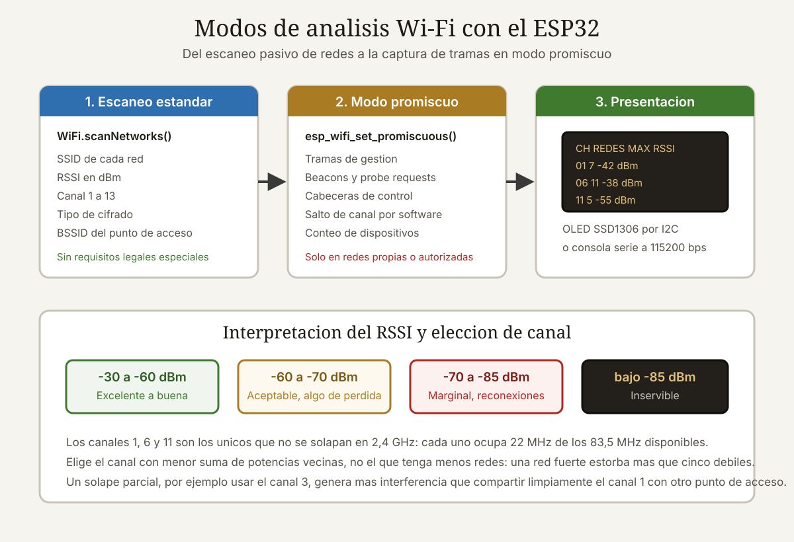

Qué cubre esta guía
Qué puede y qué no puede ver un ESP32
Antes de escribir una línea de código conviene tener claro el alcance real de la herramienta, porque circula bastante mitología al respecto. El ESP32 lleva una radio 802.11 b/g/n de 2,4 GHz con acceso a la capa física, y eso le permite hacer cosas que una tarjeta de red convencional no expone. Pero también tiene límites duros.
| Capacidad | ¿Puede el ESP32? | Detalle |
|---|---|---|
| Listar redes visibles (SSID, canal, RSSI, cifrado) | Sí | Función WiFi.scanNetworks(), sin configuración especial |
| Detectar redes ocultas | Parcialmente | Aparecen con SSID vacío; el nombre se revela si un cliente se asocia |
| Medir ocupación por canal | Sí | Contando tramas en modo promiscuo canal por canal |
| Capturar tramas de gestión y control | Sí | Modo promiscuo con filtro configurable |
| Ver direcciones MAC de clientes asociados | Sí | En las cabeceras de las tramas de datos, no en su contenido |
| Leer el contenido de tramas cifradas | No | WPA2/WPA3 cifra la carga útil; el ESP32 entrega bytes ininteligibles |
| Operar en la banda de 5 GHz | No | Ni el ESP32 clásico ni el S3 ni el C3 tienen radio de 5 GHz |
| Capturar tramas 802.11ac o ax | No | La radio es b/g/n; las tramas de estándares posteriores no se decodifican |
La banda de 2,4 GHz y sus catorce canales
La banda va de 2.400 a 2.483,5 MHz y está dividida en catorce canales separados 5 MHz entre sí. El problema es que cada canal ocupa unos 22 MHz de ancho, así que los canales adyacentes se solapan. Solo tres combinaciones no interfieren entre sí: 1, 6 y 11. Cualquier red configurada en el canal 3 está contaminando simultáneamente el 1 y el 6.
- Canales 1 al 11: permitidos en toda América, incluido Chile.
- Canales 12 y 13: permitidos en Europa y buena parte de Asia con restricciones de potencia.
- Canal 14: solo Japón y únicamente para 802.11b.
El ESP32 respeta la región configurada en el firmware. Si escaneas en Chile y no ves nada en los canales 12 y 13, no es un fallo del código: es el country code haciendo su trabajo.
Escaneo básico de redes
El punto de partida es la biblioteca WiFi del núcleo de Arduino para ESP32. El escaneo es sorprendentemente simple y ya devuelve información útil.
#include <WiFi.h>
void setup() {
Serial.begin(115200);
WiFi.mode(WIFI_STA); // modo estación, sin conectar
WiFi.disconnect(); // asegura que no hay asociación previa
delay(100);
}
void loop() {
Serial.println("Escaneando...");
int n = WiFi.scanNetworks(); // escaneo bloqueante
if (n == 0) {
Serial.println("No se encontraron redes.");
} else {
Serial.printf("%d redes encontradas\n\n", n);
Serial.println(" # | Ch | RSSI | Cifrado | SSID");
Serial.println("----+----+------+------------+-----------------");
for (int i = 0; i < n; i++) {
Serial.printf("%3d | %2d | %4d | %-10s | %s\n",
i + 1,
WiFi.channel(i),
WiFi.RSSI(i),
cifrado(WiFi.encryptionType(i)),
WiFi.SSID(i).c_str());
delay(5);
}
}
WiFi.scanDelete(); // libera la memoria del resultado
delay(10000);
}
const char* cifrado(wifi_auth_mode_t t) {
switch (t) {
case WIFI_AUTH_OPEN: return "ABIERTA";
case WIFI_AUTH_WEP: return "WEP";
case WIFI_AUTH_WPA_PSK: return "WPA";
case WIFI_AUTH_WPA2_PSK: return "WPA2";
case WIFI_AUTH_WPA_WPA2_PSK: return "WPA/WPA2";
case WIFI_AUTH_WPA2_ENTERPRISE: return "WPA2-EAP";
case WIFI_AUTH_WPA3_PSK: return "WPA3";
case WIFI_AUTH_WPA2_WPA3_PSK: return "WPA2/WPA3";
default: return "DESCONOCIDO";
}
}WiFi.scanDelete() libera el búfer del resultado. Sin esa llamada, un sketch que escanea en bucle acaba agotando la memoria dinámica tras unas horas. Es una de las causas más frecuentes de reinicios inexplicables en analizadores caseros.Escaneo asíncrono
El escaneo bloqueante detiene el resto del programa entre uno y tres segundos. Si tu analizador tiene pantalla o atiende un servidor web, eso se nota. La versión asíncrona resuelve el problema:
WiFi.scanNetworks(true); // true = asíncrono, devuelve inmediatamente
// más tarde, en el bucle principal:
int n = WiFi.scanComplete();
if (n == WIFI_SCAN_RUNNING) {
// sigue escaneando, haz otra cosa
} else if (n >= 0) {
procesarResultados(n);
WiFi.scanDelete();
WiFi.scanNetworks(true); // lanza el siguiente
}Escaneo activo frente a pasivo
Por defecto el ESP32 hace escaneo activo: emite tramas probe request y espera respuestas. Es rápido pero delata tu presencia, porque cualquier otro analizador en la zona verá tus probes. El escaneo pasivo se limita a escuchar los beacons que los puntos de acceso emiten cada 100 milisegundos aproximadamente:
// Escaneo pasivo: async, show_hidden, passive, tiempo por canal (ms)
WiFi.scanNetworks(true, true, true, 300);Con 300 ms por canal y once canales, un barrido pasivo completo tarda algo más de tres segundos. Es más lento, pero detecta redes que no responden a probes dirigidos y no genera tráfico.
Interpretar el RSSI sin engañarte
El RSSI (Received Signal Strength Indicator) se expresa en dBm y siempre es negativo. Cuanto más cerca de cero, mejor. Es el dato más consultado y también el peor interpretado.
| RSSI | Calidad | Qué esperar en la práctica |
|---|---|---|
| −30 a −50 dBm | Excelente | Muy cerca del punto de acceso; velocidad máxima |
| −50 a −60 dBm | Muy buena | Streaming y videollamadas sin problemas |
| −60 a −67 dBm | Buena | Umbral recomendado mínimo para voz sobre IP |
| −67 a −70 dBm | Aceptable | Navegación y IoT correctos; vídeo con cortes ocasionales |
| −70 a −80 dBm | Débil | Reconexiones frecuentes; tasa de datos muy reducida |
| Por debajo de −80 dBm | Inutilizable | La red aparece en la lista pero no sostiene una conexión |
Por qué el RSSI no es un telémetro
La tentación de convertir RSSI en distancia es enorme y produce resultados decepcionantes. La relación teórica en espacio libre es logarítmica, pero en un entorno real intervienen tres factores que la destrozan:
- Atenuación por materiales. Una pared de hormigón armado resta entre 10 y 20 dB. Un vidrio con recubrimiento metálico puede restar 25 dB. Una puerta de madera, 3 dB.
- Multitrayecto. La señal rebota en superficies metálicas y llega por varios caminos con distinta fase. Dos puntos separados 30 centímetros pueden diferir 15 dB.
- Orientación de la antena. Girar el ESP32 90 grados cambia la lectura varios decibelios. Las antenas de PCB de los módulos baratos son notoriamente direccionales.
Promediar antes de decidir
Una única lectura de RSSI no significa nada. Toma al menos diez muestras separadas un segundo y calcula la mediana, que es más robusta que la media frente a valores atípicos:
int32_t medirRSSI(const char* ssid, int muestras) {
int32_t v[32];
int obtenidas = 0;
for (int m = 0; m < muestras && obtenidas < 32; m++) {
int n = WiFi.scanNetworks(false, false, false, 200);
for (int i = 0; i < n; i++) {
if (WiFi.SSID(i) == ssid) { v[obtenidas++] = WiFi.RSSI(i); break; }
}
WiFi.scanDelete();
delay(800);
}
if (obtenidas == 0) return 0;
// ordenación por inserción y mediana
for (int i = 1; i < obtenidas; i++) {
int32_t k = v[i]; int j = i - 1;
while (j >= 0 && v[j] > k) { v[j + 1] = v[j]; j--; }
v[j + 1] = k;
}
return v[obtenidas / 2];
}Mapa de ocupación: elegir el mejor canal
Esta es, con diferencia, la aplicación más útil del ESP32 como analizador. Cuando el WiFi de casa va mal, la causa más habitual no es la distancia: es que tu router y los cinco de los vecinos comparten el mismo canal.
Puntuación ponderada por solapamiento
Contar cuántas redes hay en cada canal es un enfoque ingenuo, porque ignora el solapamiento. Una red potente en el canal 4 interfiere en el 1, el 2, el 3, el 5 y el 6. El siguiente algoritmo reparte el impacto de cada red entre los canales vecinos, ponderado por su intensidad:
void mapaDeCanales() {
float carga[15] = {0}; // índices 1..14
int n = WiFi.scanNetworks(false, true);
for (int i = 0; i < n; i++) {
int ch = WiFi.channel(i);
int rssi = WiFi.RSSI(i);
// peso: 1,0 para señal fuerte, ~0 para señal despreciable
float peso = constrain((rssi + 95) / 65.0, 0.0, 1.0);
for (int d = -4; d <= 4; d++) { // solapamiento +/-4 canales
int c = ch + d;
if (c < 1 || c > 14) continue;
float factor = 1.0 - (abs(d) * 0.22); // decae con la distancia
carga[c] += peso * factor;
}
}
WiFi.scanDelete();
Serial.println("\nOcupacion por canal:");
int mejor = 1; float minimo = 9999;
for (int c = 1; c <= 13; c++) {
Serial.printf("Ch %2d [%5.2f] ", c, carga[c]);
int barras = (int)(carga[c] * 4);
for (int b = 0; b < barras && b < 40; b++) Serial.print('#');
if (c == 1 || c == 6 || c == 11) Serial.print(" <- no solapado");
Serial.println();
if (carga[c] < minimo) { minimo = carga[c]; mejor = c; }
}
Serial.printf("\nCanal recomendado: %d\n", mejor);
}Medir tráfico real, no solo presencia
Una red con excelente señal pero sin tráfico casi no molesta. Una red débil que transfiere vídeo permanentemente ocupa el medio y te bloquea. Para medir ocupación real hay que contar tramas por canal en modo promiscuo, que es lo que veremos a continuación.
Modo promiscuo: capturar tramas
El modo promiscuo indica a la radio que entregue al software todas las tramas que detecte, no solo las dirigidas a nuestra dirección MAC. En el ESP32 se activa desde la API de ESP-IDF, accesible también desde el entorno de Arduino.
#include <WiFi.h>
#include "esp_wifi.h"
volatile uint32_t contMgmt = 0, contData = 0, contCtrl = 0;
// Estructura de la cabecera 802.11 (los primeros bytes de cada trama)
typedef struct {
uint16_t frame_ctrl;
uint16_t duration;
uint8_t addr1[6]; // receptor
uint8_t addr2[6]; // transmisor
uint8_t addr3[6]; // BSSID
uint16_t seq_ctrl;
} __attribute__((packed)) hdr80211_t;
void IRAM_ATTR sniffer(void *buf, wifi_promiscuous_pkt_type_t tipo) {
const wifi_promiscuous_pkt_t *pkt = (wifi_promiscuous_pkt_t *)buf;
const hdr80211_t *h = (hdr80211_t *)pkt->payload;
switch (tipo) {
case WIFI_PKT_MGMT: contMgmt++; break;
case WIFI_PKT_DATA: contData++; break;
case WIFI_PKT_CTRL: contCtrl++; break;
default: break;
}
uint8_t subtipo = (h->frame_ctrl >> 4) & 0x0F;
if (tipo == WIFI_PKT_MGMT && subtipo == 0x04) { // probe request
Serial.printf("PROBE de %02X:%02X:%02X:%02X:%02X:%02X RSSI %d\n",
h->addr2[0], h->addr2[1], h->addr2[2],
h->addr2[3], h->addr2[4], h->addr2[5],
pkt->rx_ctrl.rssi);
}
}
void setup() {
Serial.begin(115200);
WiFi.mode(WIFI_STA);
esp_wifi_set_promiscuous(true);
esp_wifi_set_promiscuous_rx_cb(&sniffer);
esp_wifi_set_channel(6, WIFI_SECOND_CHAN_NONE);
}
void loop() {
// salto de canal cada 400 ms para cubrir toda la banda
static uint8_t ch = 1;
esp_wifi_set_channel(ch, WIFI_SECOND_CHAN_NONE);
delay(400);
if (++ch > 13) {
Serial.printf("Mgmt:%lu Data:%lu Ctrl:%lu\n", contMgmt, contData, contCtrl);
contMgmt = contData = contCtrl = 0;
ch = 1;
}
}Los tres tipos de trama
| Tipo | Subtipos habituales | Para qué sirve al analizar |
|---|---|---|
| Gestión (0x00) | Beacon, probe request/response, authentication, association, deauthentication | Nunca va cifrada: es la fuente principal de información |
| Control (0x01) | RTS, CTS, ACK, block ACK | Indica actividad y colisiones en el medio |
| Datos (0x02) | Data, QoS data, null | Cabecera legible, carga útil cifrada por WPA2/WPA3 |
Filtrar para no ahogarse
En un entorno urbano el ESP32 puede recibir miles de tramas por segundo. Filtrar en la radio, antes de que lleguen al software, es imprescindible:
wifi_promiscuous_filter_t filtro = {
.filter_mask = WIFI_PROMIS_FILTER_MASK_MGMT // solo gestión
};
esp_wifi_set_promiscuous_filter(&filtro);Detección de dispositivos y sus límites
Los teléfonos y portátiles emiten probe requests periódicamente para buscar redes conocidas. Cada uno lleva la dirección MAC del emisor, y a partir de ahí se puede construir un contador de dispositivos presentes. Es el principio detrás de los contadores de aforo comerciales.
struct Dispositivo { uint8_t mac[6]; int8_t rssi; uint32_t visto; };
Dispositivo lista[120];
int total = 0;
void registrar(const uint8_t *mac, int8_t rssi) {
for (int i = 0; i < total; i++) {
if (memcmp(lista[i].mac, mac, 6) == 0) {
lista[i].rssi = rssi;
lista[i].visto = millis();
return;
}
}
if (total < 120) {
memcpy(lista[total].mac, mac, 6);
lista[total].rssi = rssi;
lista[total].visto = millis();
total++;
}
}
void purgar(uint32_t ventanaMs) { // olvida los no vistos recientemente
uint32_t ahora = millis();
for (int i = 0; i < total; ) {
if (ahora - lista[i].visto > ventanaMs) {
lista[i] = lista[--total];
} else i++;
}
}La aleatorización de MAC lo cambió todo
Desde iOS 8 y Android 6, y de forma agresiva desde iOS 14 y Android 10, los teléfonos generan direcciones MAC aleatorias para las tramas de sondeo cuando no están asociados. Android 10 introdujo además MAC aleatoria por red, y las versiones recientes la rotan periódicamente incluso estando conectado.
| Situación | MAC observada | ¿Sirve para contar? |
|---|---|---|
| Teléfono moderno buscando redes | Aleatoria, cambia cada pocos minutos | No: sobrestima enormemente el recuento |
| Teléfono asociado a una red | MAC por red, estable mientras dure la sesión | Sí, dentro de esa red |
| Dispositivo IoT (ESP32, cámara, enchufe) | MAC real del fabricante | Sí, con total fiabilidad |
| Portátil con Windows 11 por defecto | Aleatoria en sondeo, real al asociarse | Parcialmente |
¿Cómo distinguir una MAC aleatoria de una real? El segundo bit menos significativo del primer byte es el bit «localmente administrado». Si está a uno, la dirección es aleatoria:
bool esAleatoria(const uint8_t *mac) {
return (mac[0] & 0x02) != 0;
}Analizador portátil con pantalla
Un analizador conectado por USB al portátil es útil en el escritorio; uno autónomo con pantalla y batería es el que realmente usas para recorrer una casa buscando zonas muertas.
Lista de materiales
| Componente | Recomendación | Nota |
|---|---|---|
| Placa | ESP32-WROOM-32 o ESP32-S3 | El S3 tiene más RAM para búferes de captura |
| Pantalla | OLED SSD1306 de 128×64 por I²C | Consumo bajo; suficiente para gráficos de barras |
| Alternativa | TFT ST7789 de 240×240 por SPI | Color y más resolución; consume bastante más |
| Batería | Celda LiPo de 1.000 a 2.000 mAh | Autonomía de tres a seis horas escaneando |
| Carga | Módulo TP4056 con protección | Salida siempre por los terminales OUT |
| Entrada | Dos pulsadores | Cambio de modo y congelar pantalla |
Reparto entre los dos núcleos
El ESP32 tiene dos núcleos y esta aplicación se beneficia claramente de usarlos: la captura no puede pararse mientras se refresca la pantalla.
void setup() {
// núcleo 0: captura y salto de canal
xTaskCreatePinnedToCore(tareaCaptura, "captura", 4096, NULL, 2, NULL, 0);
// núcleo 1: interfaz de usuario
xTaskCreatePinnedToCore(tareaPantalla, "pantalla", 4096, NULL, 1, NULL, 1);
}La comunicación entre ambas tareas debe hacerse con una cola de FreeRTOS o con un mutex protegiendo la estructura compartida. Acceder al mismo array desde dos núcleos sin sincronización produce corrupción de datos difícil de depurar.
Consumo y autonomía
- Escaneando de forma continua: 120 a 160 mA. Con 2.000 mAh, unas doce horas teóricas y siete u ocho reales.
- Modo promiscuo permanente: 130 a 180 mA. La radio está siempre recibiendo.
- Con OLED encendido: añade 15 a 25 mA según el número de píxeles activos.
- Sueño ligero entre barridos: baja la media a 40 o 50 mA si escaneas cada 30 segundos.
Qué es legal y qué no
Esta sección no es un adorno. El mismo hardware sirve para diagnosticar tu red y para cometer un delito, y la diferencia está en lo que haces con él.
| Actividad | Valoración general |
|---|---|
| Escanear SSID y RSSI de redes visibles | Legal: son emisiones públicas por diseño |
| Medir ocupación de canales para configurar tu router | Legal y recomendable |
| Capturar tramas de gestión en modo promiscuo | Zona gris; depende de la jurisdicción y del uso posterior |
| Registrar direcciones MAC de terceros y asociarlas a personas | Tratamiento de datos personales: sujeto a la ley de protección de datos |
| Descifrar tráfico ajeno o capturar handshakes para romper claves | Delito de acceso no autorizado en prácticamente todas partes |
| Emitir tramas de desautenticación | Interferencia intencionada al servicio: sancionable |
| Suplantar un punto de acceso legítimo | Delito informático y, según el caso, fraude |
Regla simple y suficiente para el 99 % de los casos: analiza tu propia red y tu propio espectro. Si necesitas auditar una red ajena, hazlo con autorización escrita del titular y con un alcance definido por adelantado. Es exactamente lo que hace cualquier profesional de seguridad ofensiva, y el motivo por el que el contrato precede al escaneo.
Conclusión
El ESP32 es, por unos pocos miles de pesos, la herramienta de diagnóstico WiFi con mejor relación entre coste y capacidad que existe. Para el trabajo cotidiano — averiguar por qué el WiFi va mal en una habitación, decidir entre el canal 1, el 6 y el 11, o verificar que un dispositivo IoT está transmitiendo — resuelve el problema sin necesidad de un analizador de espectro de laboratorio.
Sus dos límites reales conviene tenerlos siempre presentes: no ve la banda de 5 GHz, donde vive gran parte del tráfico moderno, y la aleatorización de direcciones MAC ha invalidado el conteo ingenuo de personas. Reconocer esos límites es lo que separa una herramienta útil de una fuente de conclusiones equivocadas.
Si vas a construir uno solo, hazlo con pantalla y batería. Un analizador que puedes pasear por la casa mientras miras el gráfico de barras en tiempo real enseña más sobre propagación de radio en una tarde que cualquier cantidad de lectura teórica.
Preguntas frecuentes
¿El ESP32 puede analizar redes WiFi de 5 GHz?
No. Ni el ESP32 original ni las variantes S2, S3, C3 o C6 disponen de radio para la banda de 5 GHz: todas operan exclusivamente en 2,4 GHz. El ESP32-C5 es el primer chip de la familia que incorpora doble banda, pero su disponibilidad y su soporte de software todavía son limitados. Para analizar 5 GHz o 6 GHz necesitas un adaptador USB con chipset compatible con modo monitor conectado a un portátil, o una herramienta comercial. El ESP32 sigue siendo perfectamente válido para diagnosticar la banda de 2,4 GHz, que es donde se concentran los dispositivos domóticos y donde más congestión suele haber.
¿Puedo leer las contraseñas o el contenido de las redes cercanas?
No. El modo promiscuo entrega las tramas tal como viajan por el aire, y en una red WPA2 o WPA3 la carga útil está cifrada con una clave derivada de la contraseña que el ESP32 no posee. Solo las cabeceras y las tramas de gestión son legibles, lo que permite ver direcciones MAC, nombres de red y tipos de trama, pero nunca el contenido. Capturar el intercambio de autenticación para intentar romper la clave por fuerza bruta es técnicamente posible con otras herramientas, pero constituye un delito de acceso no autorizado si la red no es tuya.
¿Por qué mi analizador detecta muchos más dispositivos de los que hay?
Casi con certeza por la aleatorización de direcciones MAC. Los teléfonos modernos generan una dirección distinta cada vez que buscan redes, de modo que un único teléfono puede aparecer como diez dispositivos diferentes a lo largo de media hora. Puedes filtrar comprobando el bit localmente administrado, el segundo bit menos significativo del primer byte de la dirección: si está a uno, la MAC es aleatoria y no representa un dispositivo único. Aun aplicando ese filtro, el recuento de personas mediante WiFi ha dejado de ser fiable con las políticas de privacidad actuales.
¿Cuál es el mejor canal para configurar mi router en 2,4 GHz?
Siempre uno de los tres canales que no se solapan: 1, 6 u 11. Ejecuta el mapa de ocupación durante varios minutos en distintos momentos del día y quédate con el que acumule menos carga ponderada entre esos tres. Aunque el análisis señale que el canal 3 o el 8 están más despejados, elegirlos es contraproducente: interfieren parcialmente con dos grupos de vecinos que reaccionarán aumentando su potencia. Repite la medición cada pocos meses, porque el panorama radioeléctrico de un edificio cambia cada vez que alguien instala un router nuevo.
¿Es legal usar un ESP32 en modo promiscuo?
Escuchar las emisiones públicas de radio, que es lo que hacen los beacons y los probes, no suele ser ilegal en sí mismo. El problema aparece con lo que ocurre después: almacenar direcciones MAC asociables a personas constituye tratamiento de datos personales y queda sujeto a la normativa correspondiente, y cualquier intento de descifrar tráfico ajeno o de interferir con emisiones propias es directamente delictivo. En Chile aplican la Ley 21.459 de delitos informáticos y la Ley 19.628 sobre protección de datos. Limítate a tu propia red o trabaja con autorización escrita del titular.
¿Qué diferencia hay entre escaneo activo y pasivo?
El escaneo activo emite tramas de sondeo dirigidas y espera respuesta de los puntos de acceso, lo que lo hace rápido, en torno a cien milisegundos por canal, pero revela tu presencia a cualquiera que esté escuchando. El escaneo pasivo se limita a esperar los beacons que los puntos de acceso emiten espontáneamente cada cien milisegundos aproximadamente, por lo que necesita más tiempo por canal, entre doscientos y trescientos milisegundos, pero no genera tráfico y detecta redes configuradas para ignorar sondeos dirigidos. Para diagnóstico prolongado el pasivo es preferible; para una comprobación rápida basta el activo.
Este artículo es contenido editorial independiente: no contiene ubicaciones patrocinadas ni enlaces de afiliado. Si en futuras actualizaciones se agregan enlaces a proveedores de componentes, serán identificados explícitamente. El código y las conexiones son referenciales y deben adaptarse y probarse con tu propio hardware. Si detectas un error en esta guía, por favor avísanos.
Sigue aprendiendo
Aprovecha los dos núcleos del chip para separar captura e interfaz con la guía de programación multinúcleo en el ESP32, y alimenta tu analizador portátil con seguridad usando el módulo de carga TP4056.
Fuentes primarias y lecturas recomendadas
Documentación oficial de Espressif y textos normativos citados. Verifica siempre la legislación vigente en tu jurisdicción antes de capturar tráfico.
- Espressif — API de Wi-Fi de ESP-IDF (modo promiscuo y filtros)
- IEEE 802.11 — Estándar de redes inalámbricas de área local
- Wi-Fi Alliance — Seguridad WPA3
- Espressif — Arduino core para ESP32, biblioteca WiFi
- Biblioteca del Congreso Nacional de Chile — Ley 21.459 sobre delitos informáticos
- Biblioteca del Congreso Nacional de Chile — Ley 19.628 sobre protección de la vida privada
- Subsecretaría de Telecomunicaciones de Chile — Normativa de espectro
Enlaces revisados: 15 de agosto de 2026.